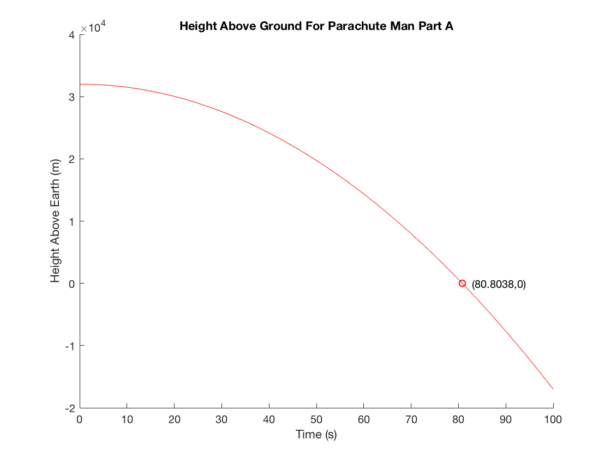
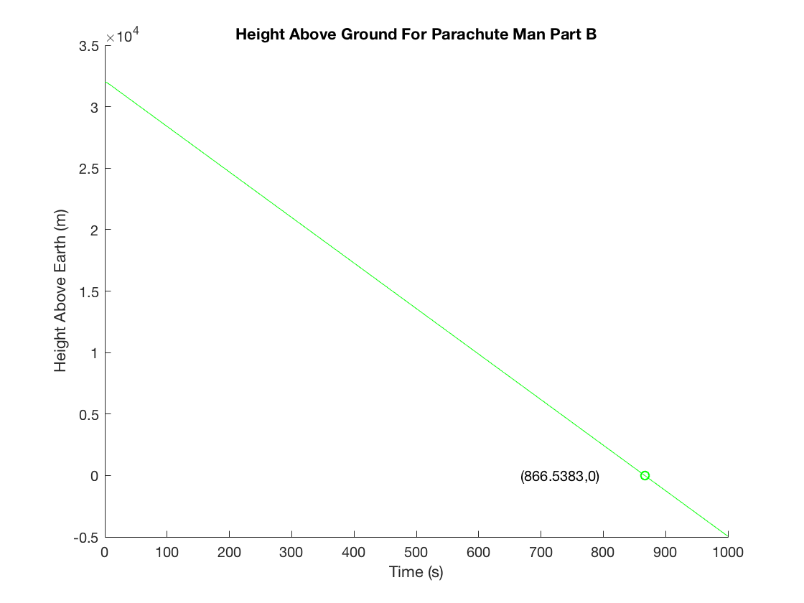
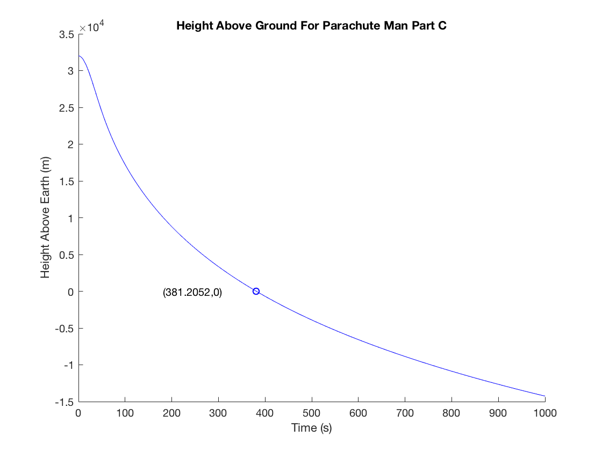
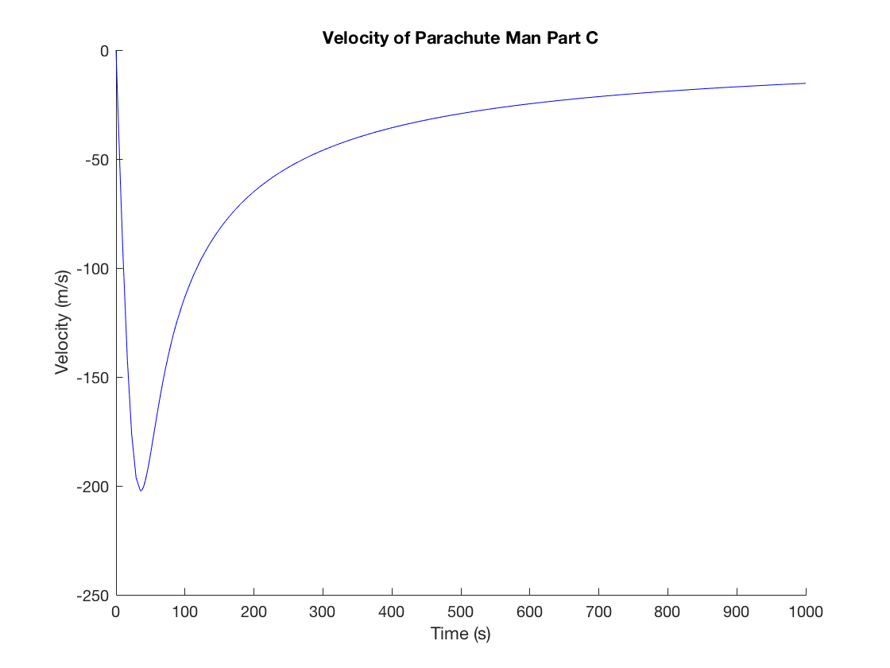
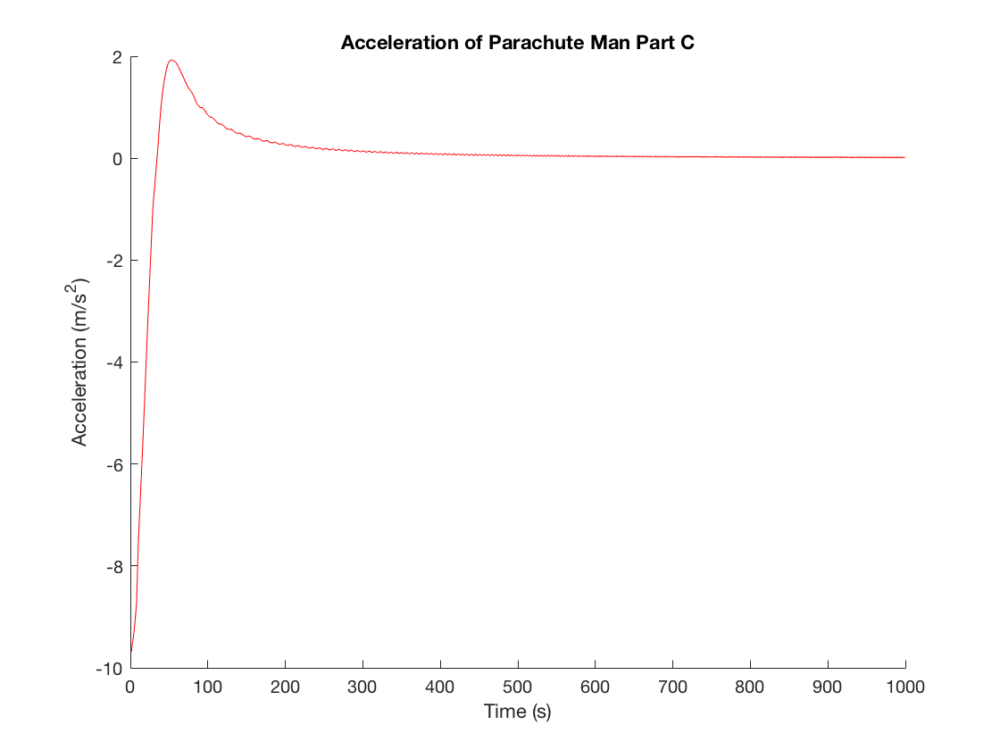

Fowels and Cassidy Problem C 2.1
Luke Polson V00849485
Contents
Constants
Defines appropriate constants
c=0.5; m=70; heightinitial=32000; g = 9.8;
ODE Solver
Solves ODEs for each parts a-c
% Part A fa = @(t,y)[y(2) ; -g]; [ta,sola] = ode45(fa, [0 100], [heightinitial; 0]); heighta=sola(:,1); % entire first column ->corresponds to y(1)=x (height) speeda=sola(:,2); %entire second column ->corresponds to y(2)=v (speed) % Part B fb = @(t,y)[y(2) ; -g-(c/m)*abs(y(2))*(y(2))]; [tb,solb] = ode45(fb, [0 1000], [heightinitial; 0]); heightb=solb(:,1); % entire first column ->corresponds to y(1)=x (height) speedb=solb(:,2); %entire second column ->corresponds to y(2)=v (speed) % Part C fc = @(t,y)[y(2) ; compgrav(y(1))+(constfall(y(1))/m)*y(2)^2]; [tc,solc] = ode45(fc, [0 1000], [heightinitial; 0]); heightc=solc(:,1); % entire first column ->corresponds to y(1)=x (height) speedc=solc(:,2); %entire second column ->corresponds to y(2)=v (speed)
Plotting of Altitude
Plots height as a function of time for each part Uses an interpolate function to find the point where the parachute man hits the ground, and plots this position on the graph
%Part A figure('name','Height Part A','NumberTitle','on'); hold on; title('Height Above Ground For Parachute Man Part A') ylabel('Height Above Earth (m)') xlabel('Time (s)') plot(ta,heighta, 'r'); tgrounda = interp1(heighta,ta,0); plot(tgrounda, 0, 'or'); text(tgrounda+2,0,['(' num2str(tgrounda),',' num2str(0) ')']); hold off; %Part B figure('name','Height Part B','NumberTitle','off'); hold on; title('Height Above Ground For Parachute Man Part B') ylabel('Height Above Earth (m)') xlabel('Time (s)') plot(tb,heightb, 'g'); tgroundb = interp1(heightb,tb,0); plot(tgroundb, 0, 'og'); text(tgroundb-200,0,['(' num2str(tgroundb),',' num2str(0) ')']); hold off; %Part C figure('name','Height Part C','NumberTitle','off'); hold on; title('Height Above Ground For Parachute Man Part C') ylabel('Height Above Earth (m)') xlabel('Time (s)') plot(tc,heightc, 'b'); tgroundc = interp1(heightc,tc,0); plot(tgroundc, 0, 'ob'); text(tgroundc-200,0,['(' num2str(tgroundc),',' num2str(0) ')']); hold off;  
Plotting Of Velocity and Acceleration
Plots velocity and acceleration of parachute man for part c
%Velocity figure('name','Velocity Part C','NumberTitle','off'); hold on; title('Velocity of Parachute Man Part C') ylabel('Velocity (m/s)') xlabel('Time (s)') plot(tc,speedc, 'b'); hold off; %Acceleration figure('name','Acceleration Part C','NumberTitle','off'); hold on; title('Acceleration of Parachute Man Part C') ylabel('Acceleration (m/s^2)') xlabel('Time (s)') a=diff(speedc)./diff(tc); a(end+1)=a(end); plot(tc,a,'r'); hold off; 